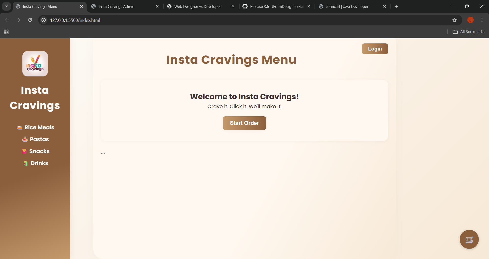

Hello! I'm Johncarl, an IT student at National University - Clark majoring in Web and Mobile Application. I am a passionate Web Developer and Designer, as well as a Java desktop app developer. I love building beautiful, functional websites and desktop applications that solve real-world problems.
With a strong foundation in both design and development, I create user-friendly web experiences using HTML, CSS, and modern design principles. I am a quick learner, adaptable, and passionate about continuous learning. My background includes HR experience and IT certifications like CompTIA ITF+, giving me a strong foundation in both communication and tech troubleshooting.
Location: Concepcion, Tarlac
Email: johncarlvelasquez482@gmail.com
Phone: 09660084563
Certifications: CompTIA ITF+
Java (Swing, JDBC)
SQLite / MySQL
HTML & CSS
Responsive Web Design
JavaScript (ES6+)
Firebase
Git & GitHub
Problem Solving
Hardware Troubleshooting
Networking Fundamentals
Java (Swing, JDBC)
SQLite / MySQL
HTML & CSS
Responsive Web Design
JavaScript (ES6+)
Firebase
Git & GitHub
Problem Solving
Hardware Troubleshooting
Networking Fundamentals
Projects

Instacravings Online Menu & Ordering
A modern web-based food menu and ordering system for Insta Cravings. Users can browse rice meals, pastas, snacks, and drinks, add items to their cart, and place orders online. Features a clean UI, live order tracking, and customer login for loyalty rewards.
A Java desktop application designed to facilitate sharing and borrowing of resources (e.g., books, tools, equipment) within a small community, organization, or campus.
A Java desktop app that helps manage cemetery burial records and grave plots using a visual 4x4 grid. Admins can add, edit, delete, and search burial data. Built with Java Swing and SQLite.
A behind-the-scenes look at how I designed and developed the Insta Cravings online menu and ordering system using modern web technologies.
Building the Resource Sharing Platform
April 2024
Discover how I created a Java desktop app to help communities share and borrow resources efficiently, from concept to deployment.
Designing the Cemetery Management System
March 2024
My experience building a visual, grid-based Java app for managing cemetery records and grave plots, with a focus on usability and data integrity.
How I Built My Insta Cravings Menu
May 2024
Overview: Insta Cravings is an online menu and ordering system I built to help customers easily browse, order, and track their favorite meals. The project was inspired by the need for a simple, user-friendly digital menu for a local food business.
Tech Stack: HTML, CSS, JavaScript, Firebase
Key Features:
Modern, mobile-friendly design with clear categories for rice meals, pastas, snacks, and drinks
Interactive cart and order tracking
Customer login for loyalty rewards
Real-time updates using Firebase
Development Process: I started by designing the UI in Figma, focusing on simplicity and ease of use. I then built the frontend with HTML, CSS, and JavaScript, and used Firebase for authentication, database, and hosting. I paid special attention to accessibility and responsive design so anyone can use the menu on any device.
What I Learned: This project taught me a lot about real-time web apps, user experience, and the power of cloud platforms like Firebase. It was rewarding to see real customers using the system and providing positive feedback!
Overview: The Resource Sharing Platform is a Java desktop application designed to help communities, organizations, or campuses share and borrow resources like books, tools, and equipment.
Tech Stack: Java, Swing, SQLite, JDBC
Key Features:
Easy-to-use interface for adding, borrowing, and returning resources
Search and filter functionality for quick access to items
Data persistence using SQLite database
User authentication and activity tracking
Development Process: I focused on creating a clean, intuitive UI with Java Swing and ensured robust data handling with JDBC and SQLite. The project helped me strengthen my skills in desktop app development and database integration.
What I Learned: This project taught me about user experience in desktop apps, database management, and the importance of clear workflows for resource management.
Overview: The Cemetery Management System is a Java desktop app that helps administrators manage burial records and grave plots using a visual 4x4 grid.
Tech Stack: Java, Swing, SQLite, JDBC
Key Features:
Visual grid for managing and viewing grave plots
CRUD operations for burial records
Search and filter for quick data access
Data stored securely in SQLite
Development Process: I designed the grid-based UI with Java Swing and implemented robust data management with SQLite and JDBC. The focus was on usability and ensuring data integrity for sensitive records.
What I Learned: This project deepened my understanding of UI design for specialized applications and the importance of reliable data handling in real-world scenarios.